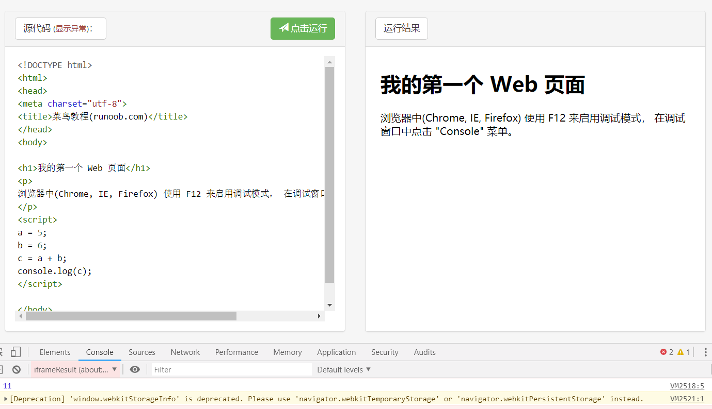
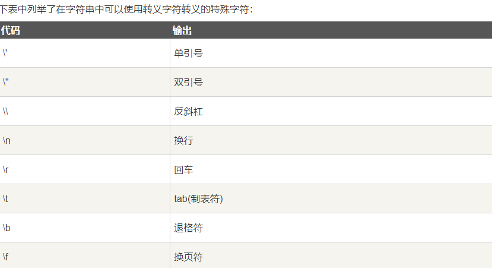

js笔记
JavaScript 用法
HTML 中的脚本必须位于 <script> 与 </script> 标签之间。
脚本可被放置在 HTML 页面的 <body> 和 <head> 部分中。
js可以自己编写
也可以把脚本保存到外部文件中。外部文件通常包含被多个网页使用的代码。
外部 JavaScript 文件的文件扩展名是 .js。
如需使用外部文件，请在<script>标签的 “src” 属性中设置该 .js 文件：
1 | <!DOCTYPE html> |
注意细节：
1、在标签中填写 onclick 事件调用函数时，不是 onclick=函数名， 而是 **onclick=函数名+()**，代码如下：
2
3
4
5
6
7
8
9
function myfunction(){
document.getElementById("demo").innerHTML="onclick事件触发";
}</script>
</head>
><body>
<h1 id="demo">一个段落</h1>
<button onclick="myfunction()" type="button">点击这里</button>
></body>2、外部 javascript 文件不使用
<script>标签，直接写 javascript 代码。3、HTML 输出流中使用 document.write，相当于添加在原有html代码中添加一串html代码。而如果在文档加载后使用（如使用函数），会覆盖整个文档。
使用函数来执行document.write代码如下：
2
3
4
5
6
7
8
9
10
11
12
>function myfunction(){
document.write("使用函数来执行doucment.write，即在文档加载后再执行这个操作，会实现文档覆盖");
>}
>document.write("<h1>这是一个标题</h1>");
>document.write("<p>这是一个段落。</p>");
></script>
><p >
>您只能在 HTML 输出流中使用 <strong>document.write</strong>。
>如果您在文档已加载后使用它（比如在函数中），会覆盖整个文档。
></p>
><button type="button" onclick="myfunction()">点击这里</button>
JavaScript 输出
JavaScript 没有任何打印或者输出的函数。
JavaScript 显示数据
JavaScript 可以通过不同的方式来输出数据：
使用 window.alert() 弹出框。
window.alert(5 + 6);使用 document.write() 方法将内容写到 HTML 文档中。
1
2
3
4
5
6
7
8
9
10
11
12
13
14
15
16
17
18<!DOCTYPE html>
<html>
<body>
<h1>我的第一个 Web 页面</h1>
<p>我的第一个段落。</p>
<button onclick="myFunction()">点我</button>
<script>
function myFunction() {
document.write(Date());
}
</script>
</body>
</html>使用 innerHTML 写入到 HTML 元素。
使用 console.log() 写入到浏览器的控制台。

JavaScript 语法
JavaScript 是一个程序语言。语法规则定义了语言结构。
JavaScript 语法
JavaScript 是一个脚本语言。
它是一个轻量级，但功能强大的编程语言。
JavaScript 字面量
在编程语言中，一般固定值称为字面量，如 3.14。
数字（Number）字面量 可以是整数或者是小数，或者是科学计数(e)
1 | <p id="demo"></p> |
表达式字面量
1 | <p id="demo"></p> |
数组（Array）字面量 定义一个数组：
[40, 100, 1, 5, 25, 10]
对象（Object）字面量 定义一个对象：
{firstName:"John", lastName:"Doe", age:50, eyeColor:"blue"}
函数（Function）字面量 定义一个函数：
function myFunction(a, b) { return a * b;}
JavaScript 变量
对大小写敏感
在编程语言中，变量用于存储数据值。
JavaScript 使用关键字 var 来定义变量， 使用等号来为变量赋值：
1 | <p id="demo"></p> |
1 | <p id="demo"></p> |
JavaScript 注释
不是所有的 JavaScript 语句都是”命令”。双斜杠 // 后的内容将会被浏览器忽略：
多行注释/* */
JavaScript 数据类型
JavaScript 有多种数据类型：数字，字符串，数组，对象等等：
1 | var length = 16; // Number 通过数字字面量赋值 |
JavaScript 函数
JavaScript 语句可以写在函数内，函数可以重复引用：
引用一个函数 = 调用函数(执行函数内的语句)。
1 | function myFunction(a, b) { |
1 | <p id="myPar">我是一个段落。</p> |
JavaScript 会忽略多余的空格。
对代码行进行折行
您可以在文本字符串中使用反斜杠对代码行进行换行。下面的例子会正确地显示：
实例
document.write("你好 \ 世界!");
JavaScript 数据类型
**值类型(基本类型)**：字符串（String）、数字(Number)、布尔(Boolean)、对空（Null）、未定义（Undefined）、Symbol。
引用数据类型：对象(Object)、数组(Array)、函数(Function)。
1 | 下面的代码创建名为 cars 的数组： |
1 | JavaScript 对象 |
JavaScript 函数语法
函数就是包裹在花括号中的代码块，前面使用了关键词 function：
function functionname()
{
// 执行代码
}
当调用该函数时，会执行函数内的代码。
可以在某事件发生时直接调用函数（比如当用户点击按钮时），并且可由 JavaScript 在任何位置进行调用。
1 | JavaScript 对大小写敏感。关键词 function 必须是小写的，并且必须以与函数名称相同的大小写来调用函数。 |
JavaScript 事件
HTML 事件是发生在 HTML 元素上的事情。
当在 HTML 页面中使用 JavaScript 时， JavaScript 可以触发这些事件。
HTML 事件
HTML 事件可以是浏览器行为，也可以是用户行为。
以下是 HTML 事件的实例：
- HTML 页面完成加载
- HTML input 字段改变时
- HTML 按钮被点击
通常，当事件发生时，你可以做些事情。
1 | 在事件触发时 JavaScript 可以执行一些代码。 |
JavaScript 字符串
JavaScript 字符串用于存储和处理文本。
可以是插入到引号中的任何字符。你可以使用单引号或双引号：
也可以在字符串添加转义字符来使用引号：反斜杠
var x = ‘It's alright’;
var y = “He is called "Johnny"“;

更多方法实例可以参见：JavaScript String 对象。
| 方法 | 描述 |
|---|---|
| charAt() | 返回指定索引位置的字符 |
| charCodeAt() | 返回指定索引位置字符的 Unicode 值 |
| concat() | 连接两个或多个字符串，返回连接后的字符串 |
| fromCharCode() | 将 Unicode 转换为字符串 |
| indexOf() | 返回字符串中检索指定字符第一次出现的位置 |
| lastIndexOf() | 返回字符串中检索指定字符最后一次出现的位置 |
| localeCompare() | 用本地特定的顺序来比较两个字符串 |
| match() | 找到一个或多个正则表达式的匹配 |
| replace() | 替换与正则表达式匹配的子串 |
| search() | 检索与正则表达式相匹配的值 |
| slice() | 提取字符串的片断，并在新的字符串中返回被提取的部分 |
| split() | 把字符串分割为子字符串数组 |
| substr() | 从起始索引号提取字符串中指定数目的字符 |
| substring() | 提取字符串中两个指定的索引号之间的字符 |
| toLocaleLowerCase() | 根据主机的语言环境把字符串转换为小写，只有几种语言（如土耳其语）具有地方特有的大小写映射 |
| toLocaleUpperCase() | 根据主机的语言环境把字符串转换为大写，只有几种语言（如土耳其语）具有地方特有的大小写映射 |
| toLowerCase() | 把字符串转换为小写 |
| toString() | 返回字符串对象值 |
| toUpperCase() | 把字符串转换为大写 |
| trim() | 移除字符串首尾空白 |
| valueOf() | 返回某个字符串对象的原始值 |
JavaScript 运算符
运算符 = 用于赋值。
运算符 + 用于加值。
用于字符串的 + 运算符
+ 运算符用于把文本值或字符串变量加起来（连接起来）。
如需把两个或多个字符串变量连接起来，请使用 + 运算符。
对字符串和数字进行加法运算
两个数字相加，返回数字相加的和，如果数字与字符串相加，返回字符串，如下实例：
1 | x=5+5; |
JavaScript 比较 和 逻辑运算符
比较和逻辑运算符用于测试 true 或者 false。
比较运算符
比较运算符在逻辑语句中使用，以测定变量或值是否相等。
x=5，下面的表格解释了比较运算符：
| 运算符 | 描述 | 比较 | 返回值 | 实例 |
|---|---|---|---|---|
| == | 等于 | x==8 | false | 实例 » |
| x==5 | true | 实例 » | ||
| === | 绝对等于（值和类型均相等） | x===”5” | false | 实例 » |
| x===5 | true | 实例 » | ||
| != | 不等于 | x!=8 | true | 实例 » |
| !== | 不绝对等于（值和类型有一个不相等，或两个都不相等） | x!==”5” | true | 实例 » |
| x!==5 | false | 实例 » | ||
| > | 大于 | x>8 | false | 实例 » |
| < | 小于 | x<8 | true | 实例 » |
| >= | 大于或等于 | x>=8 | false | 实例 » |
| <= | 小于或等于 | x<=8 | true | 实例 » |
如何使用
可以在条件语句中使用比较运算符对值进行比较，然后根据结果来采取行动：
if (age<18) x=”Too young”;
您将在本教程的下一节中学习更多有关条件语句的知识。
逻辑运算符
逻辑运算符用于测定变量或值之间的逻辑。
给定 x=6 以及 y=3，下表解释了逻辑运算符：
| 运算符 | 描述 | 例子 |
|---|---|---|
| && | and | (x < 10 && y > 1) 为 true |
| || | or | (x==5 || y==5) 为 false |
| ! | not | !(x==y) 为 true |
条件运算符
JavaScript 还包含了基于某些条件对变量进行赋值的条件运算符。
语法
variablename=(condition)?value1:value2
如果变量 age 中的值小于 18，则向变量 voteable 赋值 “年龄太小”，否则赋值 “年龄已达到”。
voteable=(age<18)?"年龄太小":"年龄已达到";
JavaScript if…Else 语句
和其他语言相近
JavaScript for 循环
循环可以将代码块执行指定的次数。
For/In 循环
JavaScript for/in 语句循环遍历对象的属性：
1 | var person={fname:"Bill",lname:"Gates",age:56}; for (x in person) // x 为属性名 { txt=txt + person[x]; } |
JavaScript while 循环
只要指定条件为 true，循环就可以一直执行代码块
定义了数组后对数组进行赋值，中间如有某些下标未被使用（即未被赋值），在遍历的时候，采用一般的 for 循环和 for…in 循环得到的结果不同。
for…in 循环会自动跳过那些没被赋值的元素，而 for 循环则不会，它会显示出 undefined。
点击下面的按钮，循环遍历
2
3
4
5
6
7
8
9
10
11
12
13
14
15
16
17
18
19
20
21
><p id="demo"></p>
><script>
>function myFunction(){
var array = new Array();
var x;
var txt=""
array[0] = 1;
array[3] = 2;
array[4] = 3;
array[10] = 4;
for( x in array ){
alert(array[x]); // 依次显示出 1 2 3 4
}
alert(array.length); // 结果是11
for( var i=0 ; i<4 ; i++){
alert(array[i]); // 依次显示出 1 undefined undefined 2
}
document.getElementById("demo").innerHTML = txt;
>}
></script>
 wechat
wechat alipay
alipay